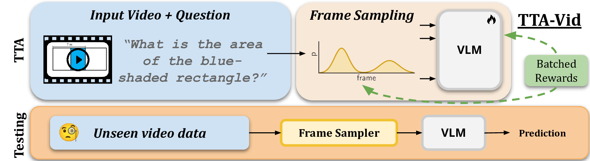
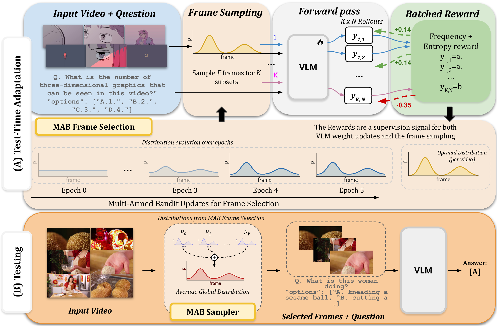
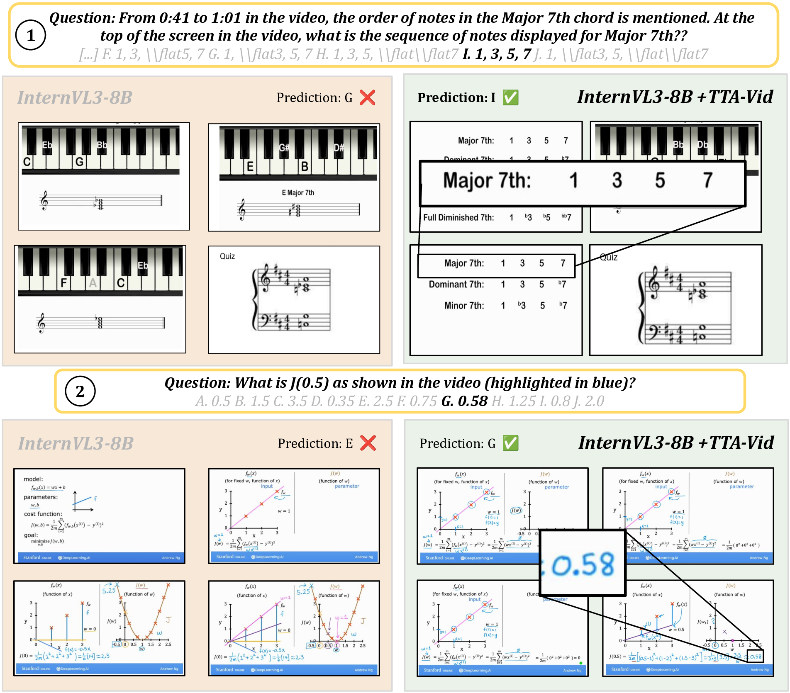
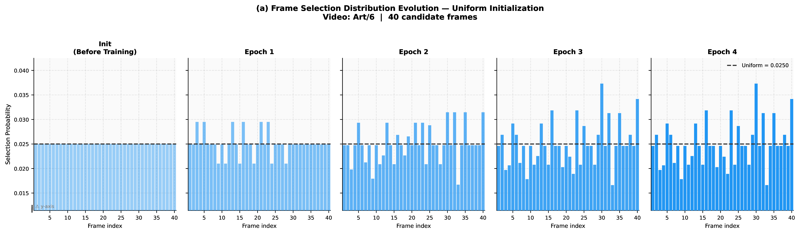
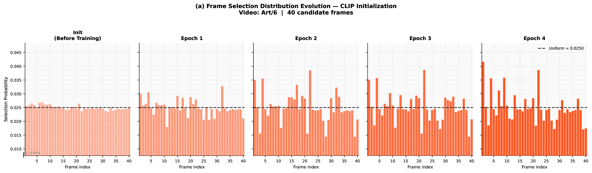

TTA-Vid adapts vision-language models at test time by sampling multiple frame subsets, enforcing majority-consistency among generated answers, and updating a frame-importance distribution via a multi-armed bandit.

TTA-Vid adapts vision-language models at test time by sampling multiple frame subsets, enforcing majority-consistency among generated answers, and updating a frame-importance distribution via a multi-armed bandit.
Recent video reasoning models have shown strong results on temporal and multimodal understanding, yet they depend on large-scale supervised data and multi-stage training pipelines, making them costly to train and difficult to adapt to new domains.
In this work, we leverage the paradigm of Test-Time Reinforcement Learning on video-language data to allow for adapting a pretrained model to incoming video samples at test time without explicit labels. The proposed test-time adaptation for video approach (TTA-Vid) performs step-by-step reasoning at inference time on multiple frame subsets. We then use a batch-aware frequency-based reward computed across different frame subsets as pseudo ground truth to update the model.
We show that the resulting model, trained on a single batch or even a single sample from a dataset, is able to generalize at test time to the whole dataset and even across datasets. Additionally, we propose a multi-armed bandit strategy for adaptive frame selection that learns to prioritize informative frames, guided by the same reward formulation.

TTA-Vid performs test-time adaptation of model parameters through a batch-aware reinforcement learning objective and adaptively selects the most informative frames using a multi-armed bandit approach. Both components leverage a shared reward signal computed across multiple video frame subsets, enabling the model to jointly learn what to predict and which frames to attend to.
| Model | #params | #frames | VideoMMMU | MMVU | SciVideoBench | VideoMME | LongVideoBench | Avg. |
|---|---|---|---|---|---|---|---|---|
| Proprietary Models | ||||||||
| GPT-4o | - | - | 61.22 | 75.40 | 24.90 | 71.90 | 66.70 | 60.02 |
| Gemini 1.5 Flash | - | - | 49.78 | 58.80 | - | 70.30 | 61.60 | - |
| Non-Reasoning Models | ||||||||
| LLaVA-OneVision | 7B | 64 | 33.89 | 49.20 | 18.80 | 58.20 | 56.30 | 43.27 |
| Qwen-2.5-VL | 7B | ≤768 | 47.44 | 59.20 | 16.40 | 56.00 | 65.10 | 48.82 |
| InternVL-3 | 8B | 32 | 49.33 | 60.80 | 26.50 | 61.18 | 59.08 | 51.37 |
| Reasoning Models | ||||||||
| Video-RTS | 7B | 128 | 52.70 | 66.40 | - | 63.00 | 56.60 | - |
| Video-R1 | 7B | 128 | 47.00 | 64.00 | 26.80 | 64.30 | 57.60 | 51.94 |
| VideoChat-R1 | 7B | 128 | 52.00 | 64.80 | 26.50 | 64.10 | 54.30 | 52.34 |
| VideoChat-R1.5 | 7B | 128 | 50.00 | 67.00 | 25.80 | 64.80 | 53.60 | 52.24 |
| Video-RFT | 7B | 128 | 48.10 | 66.70 | 25.70 | 64.10 | 57.00 | 52.32 |
| Video-R2 | 7B | 128 | 50.80 | 67.40 | 28.40 | 63.80 | 59.20 | 53.92 |
| Test-Time Adaptation (Ours) | ||||||||
| TTRV* (w/ Qwen2.5-VL) | 7B | 32 | 45.89 | 64.48 | 25.50 | 59.26 | 57.07 | 50.46 |
| TTA-Vid (w/ Qwen2.5-VL) | 7B | 32 | 49.44 | 65.12 | 25.70 | 61.14 | 57.81 | 51.84 |
| TTA-Vid (w/ InternVL-3) | 8B | 32 | 53.66 | 65.60 | 29.80 | 65.11 | 61.48 | 55.13 |
TTA-Vid outperforms video reasoning models trained on large-scale supervised data (e.g., Video-RFT with 100K+ CoT samples), using only 32 unlabeled samples at test time.

Qualitative comparison of frame selection strategies. Random sampling (left) vs. our learned selection (right) on two VideoMMMU examples. Our adaptive frame selection learns to prioritize frames containing task-relevant information, leading to correct answers where random sampling fails.

Uniform initialization

CLIP-based initialization
The multi-armed bandit learns to concentrate sampling probability on informative frames. Over training, the distribution shifts from uniform/CLIP-based to task-relevant frame selection.
@article{jahagirdar2026tta,
title={TTA-Vid: Generalized Test-Time Adaptation for Video Reasoning},
author={Jahagirdar, Soumya Shamarao and Araujo, Edson and Kukleva, Anna and Mirza, M Jehanzeb and Bhati, Saurabhchand and Thomas, Samuel and Kingsbury, Brian and Feris, Rogerio and Glass, James R and Kuehne, Hilde},
journal={arXiv preprint arXiv:2604.00696},
year={2026}
}